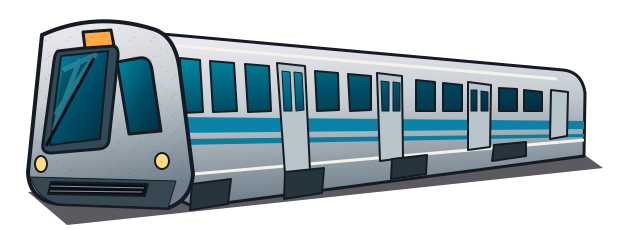

TODB
twon on da beat
BART
SYNTH
HELLA SOUND. ALL BAY.

NATIVE INSTRUMENT
MIDI & audio
Quick guide
FACTORY BANK
FUNKY BASS
Choose a Bay Area sound.
◀
▶
✦ New take
Save patch
Load patch
Sound
Sources
FX
Motion
THE BAY / CONTROL MAP
⤢
LIVE WAVEFORM
0 ACTIVE VOICES
—
−∞ dB
▶ Sequence
■ Stop notes
BPM
● Record
Save WAV
Amp
Filter
Pitch
Mod
SHAPE THE SOUND
AMP ENVELOPE
BAY SLIDE / PORTAMENTO
from the bay.
for the beat.
PLAY THE BAY
KEYBOARD / MIDI
A W S E D F T G Y H U J K
Octave
×